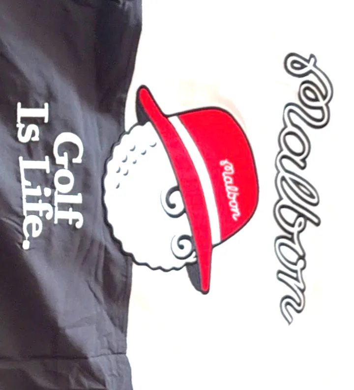

コースでも街でも映える、おしゃれなゴルフウェア。LA発で話題のMalbon Golf（編集部が愛用中）と、韓国で人気のブランドを、特徴つきでまとめました。気になるブランドは楽天で最新アイテム・価格をチェックできます。
数あるブランドのなかで、編集部が実際に愛用しているのがMalbon Golf。"借り物のおすすめ"ではなく、使っているからこその一押しです。

フェミニンで体型をきれいに見せるデザインが多く、1万円前後・人と被りにくいのが韓国ゴルフウェアの魅力。各種メディアで注目される人気ブランドを紹介します（レディース中心）。
※ 本ページの楽天リンクは A8.net 経由のアフィリエイトリンクです。リンクからのご購入で当サイトに報酬が発生する場合があります。ブランドの特徴は各種メディア情報に基づく一般的な紹介であり、価格・在庫・取扱いは時期により変動します。最新情報は各ブランド公式・楽天市場でご確認ください。Malbon Golf はアメリカ（ロサンゼルス）発のブランドです。